Linguistics 200
Day 12: Building Your Vowel System
Real-Time MRI of Spoken Language
Consonant Features
- Place
- Manner
- Voicing
Vowel Features
- Height
- Frontness
- Roundedness
- Tenseness
How Other Languages Differ
How Normal is the English Vowel System?
Difference 1: Fewer Vowels
- Many languages get by with far fewer vowel qualities
- Spanish, Japanese: five vowels — i, e, a, o, u/ɯ
- Classical Arabic: three vowel qualities — i, a, u (each short or long)
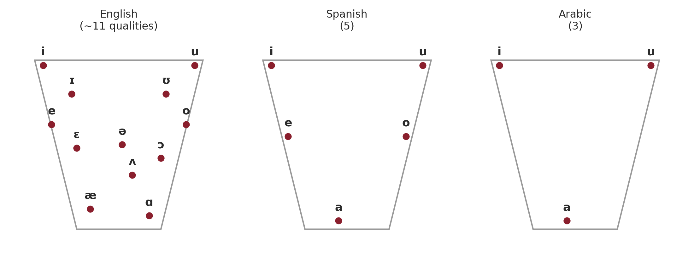
Vowel Space Distributions
- Do you notice anything interesting about the distribution of vowels in Spanish & Arabic?
Vowel Space Distributions
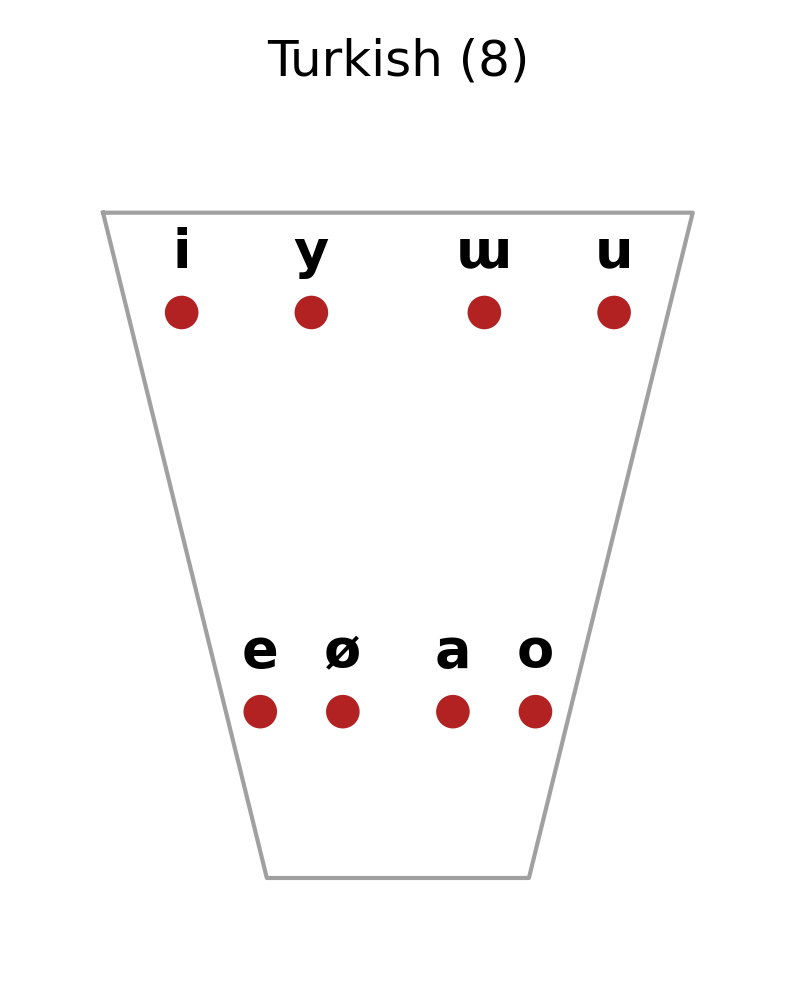
Vowel Space Distributions
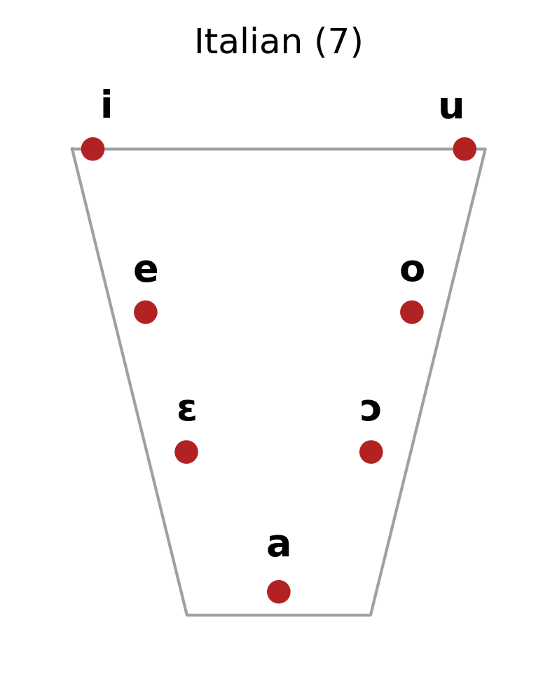
Elevator Analogy
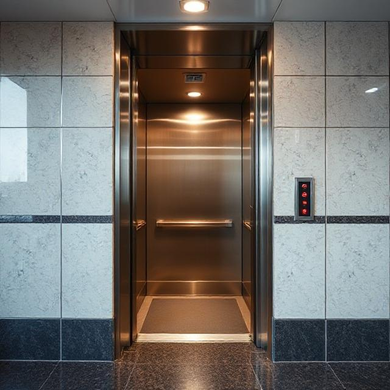
Difference 2: Nasality
- In English, vowels are nasalized only automatically, in front of a nasal consonant (bat vs. ban) — it’s not contrastive
Difference 2: Nasality
- In French, nasality is its own phoneme: bon [bɔ̃] “good” vs. beau [bo] “beautiful”
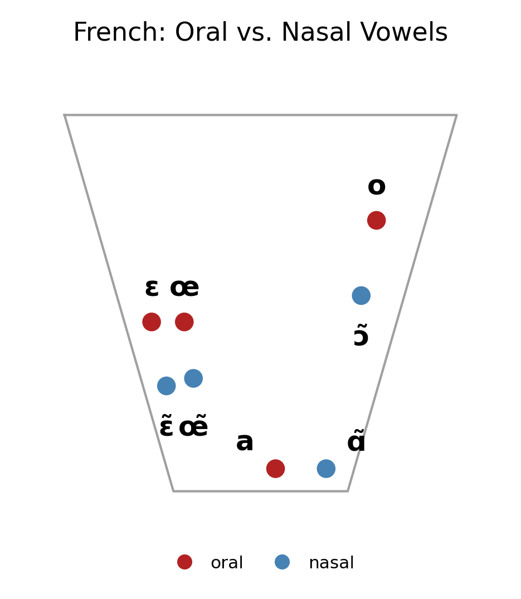
Difference 2: Nasality
- Also contrastive in Portuguese, and in many languages of West Africa and Amazonia
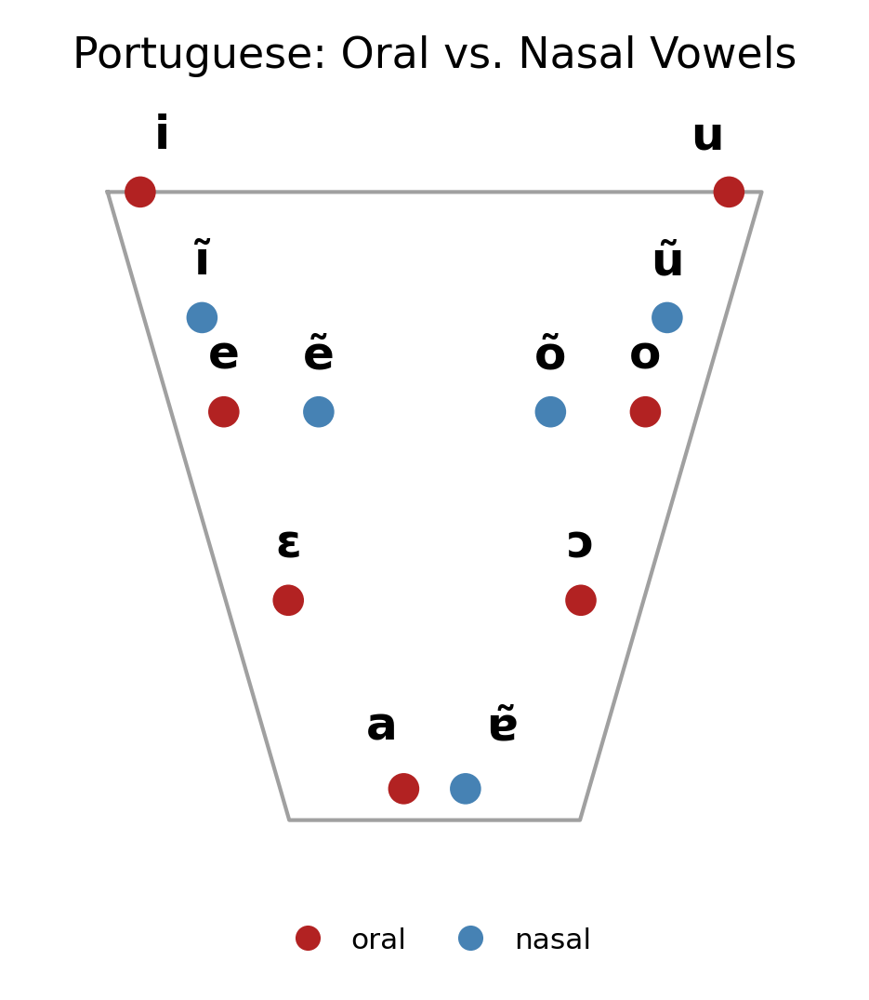
Difference 3: Front Rounded & Back Unrounded Vowels
- In English, front vowels = unrounded; back vowels are almost entirely round
Difference 3: Front Rounded & Back Unrounded Vowels
- Front rounded: French [y] tu, [ø] peu, [œ] sœur; German ü, ö
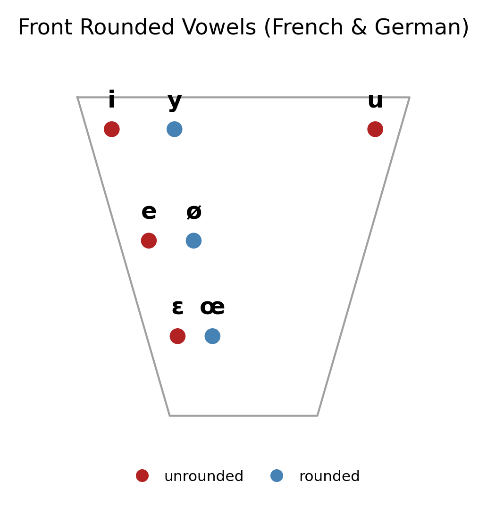
Difference 3: Front Rounded & Back Unrounded Vowels
- Back unrounded: Turkish ı [ɯ]; Japanese u [ɯ]; Korean 으 [ɯ]
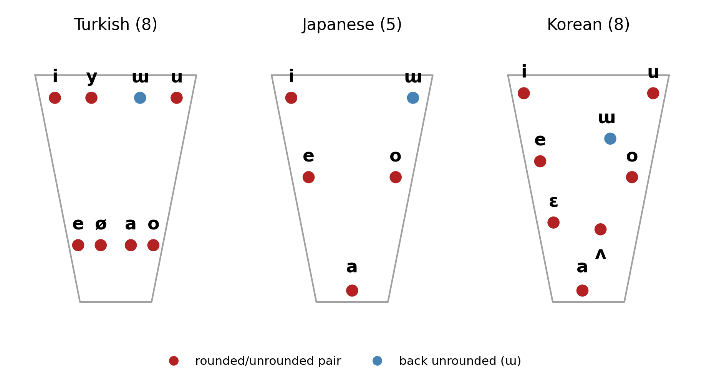
Difference 4: Vowel Length
- Some languages treat length as its own contrast, not just a byproduct of quality
- Short vs. long vowel = a completely different word
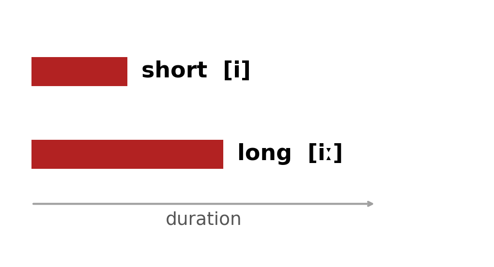
Difference 4: Vowel Length
- Sanskrit contrasts short and long at every vowel quality: a/ā, i/ī, u/ū
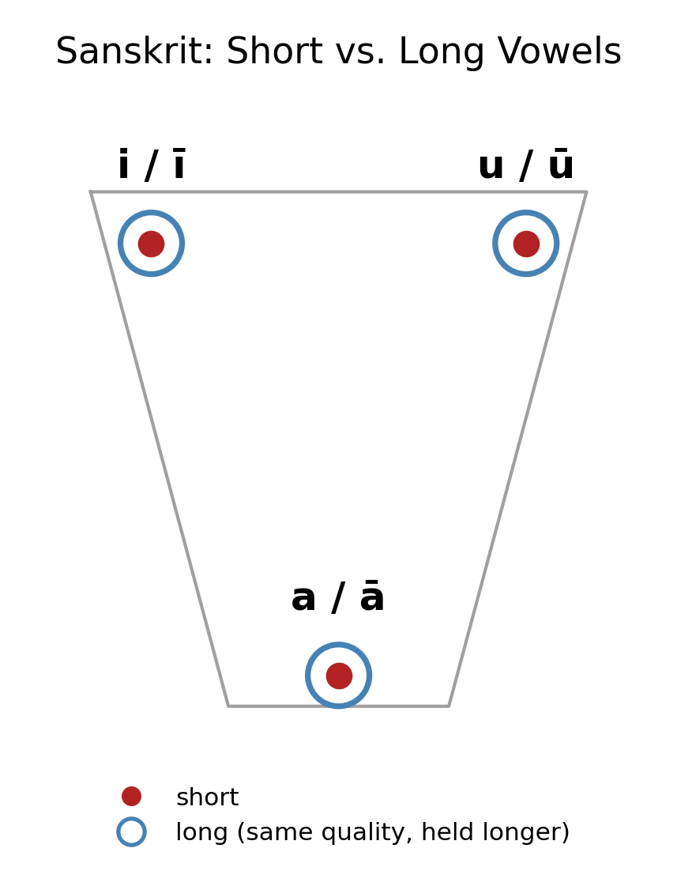
Difference 4: Vowel Length
- Sanskrit even has a syllabic r — /ṛ/ and /ṝ/ — a vowel made from a consonant!
- Vowels can also be coded as “always long”: /e/, /o/, /ai/, /au/
Back to Your Language
We just surveyed four ways vowel systems can differ from English. Time to turn each one into an actual decision for your language.
From Sounds to Names
- You already have a consonant inventory (built from your Component 1 names + Day 9)
- You’re now deciding your vowel system
- Time to put both to work — on the names themselves
Your Names, Right Now
- Your conlang’s working title
- Your three characters’ names
- Right now, every one of them is still pronounced the English way
Outpost’s Names, Right Now
- Culture: Nairetha
- Characters: Houn Sha, Malchekk, Sidiki
- Same deal — still pronounced the English way
Outpost’s Names in IPA
- Nairetha /nɛˈrɛθə/
- Houn Sha /huːn ˈʃɑː/
- Malchekk /ˈmɑltʃɛk/
- Sidiki /sɪˈdiki/
The Goal
- Turn your English-sounding names into names that could only belong to your language
- Two steps:
- Recast the consonants, using your own inventory
- Choose the vowels that fill the gaps
Recasting Consonants
- For each name, go sound by sound — not letter by letter
- Get rid of any silent letters
- For each consonant, ask: is this sound already in my inventory?
- If yes, keep it
- If no, swap in the closest sound that is in your inventory
What Counts as “Closest”?
- Match as many features as you can — voicing, place, manner
- Try to preserve place first; manner is usually the easiest thing to shift
- Example: no [θ] in your inventory, but you do have [s] and [f] — either is a reasonable swap (same manner, nearby place)
Building Outpost’s Names — Consonants
- Nairetha: [n, r, θ] → all already in the inventory → nVˈrVθV
- Houn Sha: [h, n], already in the inventory, but <sh> → [ʂ] hVn ˈʂV
Building Outpost’s Names — Consonants (cont.)
- Malchekk: [m, l, tʃ, k] → tʃ→ʈʂ, k→q → mVlˈʈʂVq
- Sidiki: [s, d, k] → d→t’ → sVˈt’VkV
Now: Your Turn
- With your inventory in hand, recast the consonants in:
- Your culture’s working title
- Character 1
- Character 2
- Character 3
- Write out each one as a consonant skeleton, using V for every open vowel slot — like nVˈrVθV above
Step 2: Building Your Vowel System
Four Decisions
Work through these in order — each one narrows your vowel system a little more.
- Reducing the vowel inventory
- Nasal or not?
- Back unrounded / front rounded?
- Vowel length?
Decision 1: Reduce Your Size
- Start from the full IPA vowel space
- Cut it way down — five vowels (Spanish/Japanese-style) or even three (Arabic-style) is a great target
- Two basic options:
Decision 1: Outpost
- Nairetha: neˈreθa / niˈriθa
- Houn Sha: hun ˈʂa
- Malchekk: ˈmalʈʂeq / ˈmalʈʂiq
- Sidiki: siˈt’iki
Decision 2: Nasal Vowels?
- Is nasality contrastive, like French or Portuguese?
- If yes: which of your vowels get a nasal counterpart?
- If no: move on
Decision 3: Back Unrounded / Front Rounded?
- Front rounded vowels (French ü/ö-style), back unrounded vowels (Turkish/Japanese ɯ-style), or neither?
- If yes: which ones, and where do they fit in your reduced set?
Decision 3: Outpost
- Nairetha: neˈreθa / niˈriθa
- Houn Sha: hỹː ˈʂa
- Malchekk: ˈmalʈʂeq / ˈmalʈʂiq
- Sidiki: sɯˈt’ikɯ
Decision 4: Vowel Length?
- Short vs. long as a real contrast, like Sanskrit?
- If yes: which vowel qualities can be long?
Decision 4: Outpost
- Nairetha: neˈreθa / niˈriθa
- Houn Sha: hỹː ˈʂa
- Malchekk: ˈmalʈʂeq / ˈmalʈʂiq
- Sidiki: sɯˈt’ikɯ
Final Vowel System for Outpost
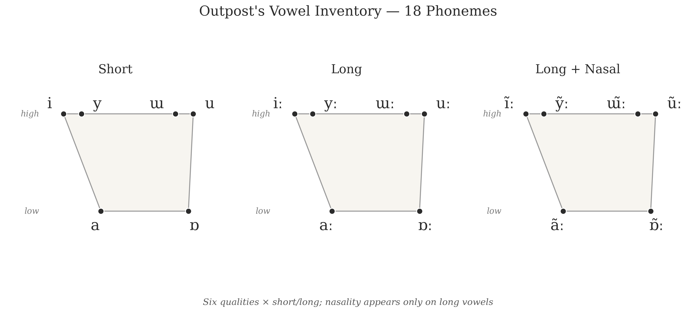
- Six qualities shown above — length and nasality aren’t on the trapezoid, they stack on top of it
- Every quality: short or long; every long vowel can also be nasal
- 18 vowel phonemes total
Step 3: Your Turn!
- Identify the consonants in your four names.
- Experiment with vowels:
- Reduce
- Nasal?
- Front Rounded / Back Unrounded?
- Length?
- Write up your vowels in your chart – make sure there’s balance!
For Next Time
- 9/23 — Phonotactics: the rules behind those patterns you just noticed
- Bring your finished consonant + vowel systems, and your four new names